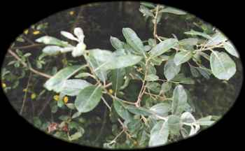
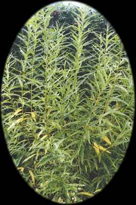

Saille
Willow (April 15 - May 12)

Willow - Like North America, Europe is home to a large number of willow species (Tutin et al. list 63 different native European willows, from low shrubs to tall trees). Two common tree willows are the white willow (Salix alba L.) and the crack willow (Salix fragilis L.). The white willow is named for the whitish undersides of its leaves, and the crack willow for the propensity of its branches to "crack" off (probably another adaptation to flooding). Both species grow along with poplars and alders along lowland rivers. They can reach 80 feet in height, and they both vigorously sprout from stumps. Other willow species are shrubs, including osiers (Salix purpurea L. and Salix viminalis L.) that grow along streams and eared willows (S. aurita L.) of acidic, boggy soils. The white willow and purple osier are sometimes grown in cultivation in North America. Willows are members of the Willow family (Salicaceae). Curtis Clark
